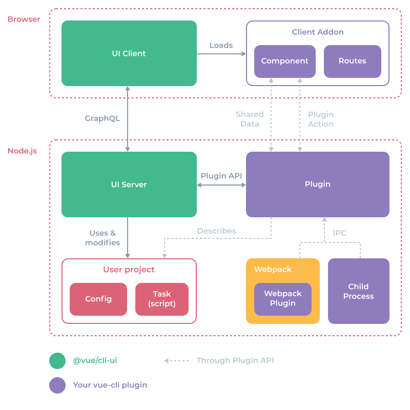
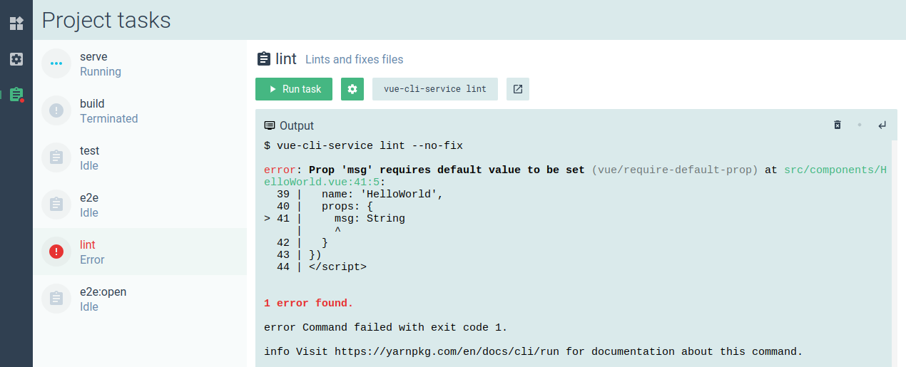
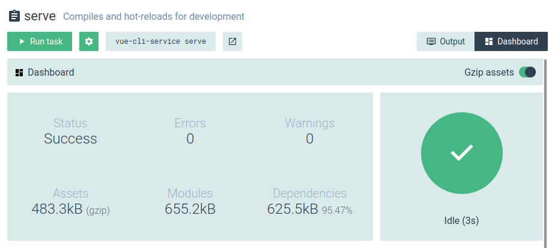
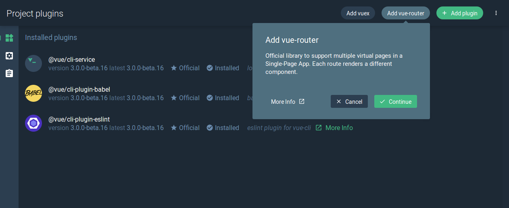

# UI 插件 API
这个 cli-ui 暴露一个 API，允许增强项目的配置和任务，也可以分享数据和在进程间进行通信。

# UI 文件
在每个安装好的 vue-cli 插件里，cli-ui 都会尝试从其插件的根目录加载一个可选的 ui.js 文件。注意你也可以使用文件夹 (例如 ui/index.js)。
该文件应该导出一个函数，函数会以 API 对象作为第一个参数：
module.exports = api => {
// 在这里使用 API...
}
警告
当试图在“项目插件 (Project plugins)”中获取插件列表时，这些文件将会被重新加载。点击 UI 左侧边栏导航“项目插件 (Project plugins)”按钮可以应用更改。
这里是一个使用 UI API 的 vue-cli 插件的文件夹结构示例：
- vue-cli-plugin-test
- package.json
- index.js
- generator.js
- prompts.js
- ui.js
- logo.png
# 项目本地的插件
如果你需要在项目里访问插件 API 而不需要创建一个完整的插件，你可以在 package.json 文件中使用 vuePlugins.ui 选项：
{
"vuePlugins": {
"ui": ["my-ui.js"]
}
}
每个文件都需要暴露一个函数，将插件 API 作为第一个参数携带。
# 开发模式
当构建你自己的插件时，你可能想在开发环境下运行 cli-ui，所以这样运行会输出较为实用的日志：
vue ui --dev
或：
vue ui -D
# 项目的配置

你可以通过 api.describeConfig 方法添加一个项目配置。
首先你需要传入一些信息：
api.describeConfig({
// 唯一的配置 ID
id: 'org.vue.eslintrc',
// 展示名称
name: 'ESLint configuration',
// 展示在名称下方的描述
description: 'Error checking & Code quality',
// “更多信息 (More info)”链接
link: 'https://eslint.org'
})
危险
请确定为 id 设置正确的命名空间，因为它需要跨所有插件保持唯一。我们推荐使用反向域名记号 (reverse domain name notation)。
# 配置图标
可以是一个 Material 图标代码或一个自定义的图片 (详见公共静态文件)：
api.describeConfig({
/* ... */
// 配置图标
icon: 'application_settings'
})
如果你没有定义图标，那就展示该插件可能存在的 logo (详见 Logo)。
# 配置文件
默认情况下，配置 UI 可能会读写一个或多个配置文件，例如 .eslintrc 和 vue.config.js。
你可以提供可能需要在用户项目中检测的文件：
api.describeConfig({
/* ... */
// 该配置所有可能的文件
files: {
// eslintrc.js
eslint: {
js: ['.eslintrc.js'],
json: ['.eslintrc', '.eslintrc.json'],
// 会从 `package.json` 读取
package: 'eslintConfig'
},
// vue.config.js
vue: {
js: ['vue.config.js']
}
},
})
支持的类型有：json、yaml、js、package。这个顺序是很重要的：如果这项配置不存在，则会创建列表中的第一个文件。
# 展示配置提示符
使用 onRead 钩子来返回一个提示符列表，用以配置展示：
api.describeConfig({
/* ... */
onRead: ({ data, cwd }) => ({
prompts: [
// 提示符对象
]
})
})
这些提示符会展示在配置的详情面板中。
查阅提示符了解更多信息。
这个 data 对象包含了每个配置文件内容的 JSON 结果。
例如，假设用户在其项目中的 vue.config.js 有以下内容：
module.exports = {
lintOnSave: false
}
我们在插件中像这样声明配置文件：
api.describeConfig({
/* ... */
// 该配置所有可能的文件
files: {
// vue.config.js
vue: {
js: ['vue.config.js']
}
},
})
则这个 data 对象会是：
{
// 文件
vue: {
// 文件数据
lintOnSave: false
}
}
多个文件的例子：如果我们在用户的项目中添加以下 eslintrc.js 文件：
module.exports = {
root: true,
extends: [
'plugin:vue/essential',
'@vue/standard'
]
}
那么在我们的插件中将 files 选项改变成为：
api.describeConfig({
/* ... */
// 该配置所有可能的文件
files: {
// eslintrc.js
eslint: {
js: ['.eslintrc.js'],
json: ['.eslintrc', '.eslintrc.json'],
// 会从 `package.json` 读取
package: 'eslintConfig'
},
// vue.config.js
vue: {
js: ['vue.config.js']
}
},
})
则这个 data 对象会是：
{
eslint: {
root: true,
extends: [
'plugin:vue/essential',
'@vue/standard'
]
},
vue: {
lintOnSave: false
}
}
# 配置选项卡
你可以将这些提示符组织成为几个选项卡：
api.describeConfig({
/* ... */
onRead: ({ data, cwd }) => ({
tabs: [
{
id: 'tab1',
label: 'My tab',
// 可选的
icon: 'application_settings',
prompts: [
// 提示符对象们
]
},
{
id: 'tab2',
label: 'My other tab',
prompts: [
// 提示符对象们
]
}
]
})
})
# 保存配置变更
使用 onWrite 钩子将数据写入配置文件 (或者执行任何 Node.js 代码)：
api.describeConfig({
/* ... */
onWrite: ({ prompts, answers, data, files, cwd, api }) => {
// ...
}
})
参数：
prompts: 当前提示符们的运行时对象 (详见下方)answers: 来自用户输入的回答数据data: 从配置文件读取的只读的初始化数据files: 被找到的文件的描述器 ({ type: 'json', path: '...' })cwd: 当前工作目录api:onWrite API(详见下方)
提示符的运行时对象：
{
id: data.name,
type: data.type,
name: data.short || null,
message: data.message,
group: data.group || null,
description: data.description || null,
link: data.link || null,
choices: null,
visible: true,
enabled: true,
// 当前值 (未被过滤的)
value: null,
// 如果用户修改过了则为 true
valueChanged: false,
error: null,
tabId: null,
// 原始的 inquirer 提示符对象
raw: data
}
onWrite API:
assignData(fileId, newData): 在写入前使用Object.assign来更新配置文件。setData(fileId, newData):newData的每个 key 在写入之前都将会被深设置在配置数据上 (或当值为undefined时被移除)。async getAnswer(id, mapper): 为一个给定的提示符 id 获取答复并通过可能提供了的mapper函数 (例如JSON.parse) 进行 map 处理。
示例 (来自 ESLint 插件)：
api.describeConfig({
// ...
onWrite: async ({ api, prompts }) => {
// 更新 ESLint 规则
const result = {}
for (const prompt of prompts) {
result[`rules.${prompt.id}`] = await api.getAnswer(prompt.id, JSON.parse)
}
api.setData('eslint', result)
}
})
# 项目的任务

任务是从项目 package.json 文件的 scripts 字段生成的。
因为有 api.describeTask 方法，你可以为任务“增强”额外的信息和钩子：
api.describeTask({
// 用于匹配脚本命令的 RegExp 对象，来选择要被描述的任务
match: /vue-cli-service serve/,
description: 'Compiles and hot-reloads for development',
// “More info”链接
link: 'https://github.com/vuejs/vue-cli/blob/dev/docs/cli-service.md#serve'
})
# 任务图标
可以是一个 Material 图标代码或一个自定义的图片 (详见公共静态文件)：
api.describeTask({
/* ... */
// 任务图标
icon: 'application_settings'
})
如果你没有定义图标，那就展示该插件可能存在的 logo (详见 Logo)。
# 任务参数
你可以添加提示符来修改命令参数。它们会展示在一个“参数”模态框中。
Example:
api.describeTask({
// ...
// 选填参数 (inquirer 提示符)
prompts: [
{
name: 'open',
type: 'confirm',
default: false,
description: 'Open browser on server start'
},
{
name: 'mode',
type: 'list',
default: 'development',
choices: [
{
name: 'development',
value: 'development'
},
{
name: 'production',
value: 'production'
},
{
name: 'test',
value: 'test'
}
],
description: 'Specify env mode'
}
]
})
详见提示符。
# 任务钩子
有一些钩子是可用的：
onBeforeRunonRunonExit
例如，你可以将 (上述) 提示符的回答作为一个新参数添加到命令上：
api.describeTask({
// ...
// 钩子
// 在这里修改参数
onBeforeRun: async ({ answers, args }) => {
// 参数
if (answers.open) args.push('--open')
if (answers.mode) args.push('--mode', answers.mode)
args.push('--dashboard')
},
// 任务运行之后立即执行
onRun: async ({ args, child, cwd }) => {
// child: Node 子进程
// cwd: 进程所在目录
},
onExit: async ({ args, child, cwd, code, signal }) => {
// code: 退出码
// signal: 可能会被使用的杀进程信号
}
})
# 任务视图
你可以在任务详情面板中使用 ClientAddon API 展示自定义视图：
api.describeTask({
// ...
// 额外的视图 (例如 webpack 仪表盘)
// 默认情况下，这里是展示终端输出的 `output` 视图
views: [
{
// 唯一 ID
id: 'vue-webpack-dashboard-client-addon',
// 按钮文字
label: 'Dashboard',
// 按钮图标
icon: 'dashboard',
// 要加载的动态组件 (详见下述“客户端 addon”章节)
component: 'vue-webpack-dashboard'
}
],
// 展示任务详情时默认选择的视图 (默认是 `output`)
defaultView: 'vue-webpack-dashboard-client-addon'
})
详见客户端 addon。
# 新增任务
你也可以不使用 api.describeTask，而是通过 api.addTask 添加一个 package.json 脚本中没有的全新任务。这些任务只会出现在 cli UI 中。
你需要提供一个 command 选项替代掉 match 选项。
示例：
api.addTask({
// 必填
name: 'inspect',
command: 'vue-cli-service inspect',
// 选填
// 其余部分类似 `describeTask` 但是没有 `match` 选项
description: '...',
link: 'https://github.com/vuejs/vue-cli/...',
prompts: [ /* ... */ ],
onBeforeRun: () => {},
onRun: () => {},
onExit: () => {},
views: [ /* ... */ ],
defaultView: '...'
})
警告
command 将会运行一个 Node 上下文。也就是说你可以像在 package.json 脚本中一样调用 Node 的 bin 命令。
# 提示符
提示符对象必须是合法的 inquirer 对象。
不过你也可以添加下列额外的字段 (只会被 UI 使用的可选项)：
{
/* ... */
// 用来将提示符按章节分组
group: 'Strongly recommended',
// 附加描述
description: 'Enforce attribute naming style in template (`my-prop` or `myProp`)',
// “More info”链接
link: 'https://github.com/vuejs/eslint-plugin-vue/blob/master/docs/rules/attribute-hyphenation.md',
}
支持的 inquirer 类型有：checkbox、confirm、input、password、list、rawlist。
此外，UI 还支持了仅在这里工作的特殊类型：
color：展示一个取色器。
# Switch 示例
{
name: 'open',
type: 'confirm',
default: false,
description: 'Open the app in the browser'
}
# Select 示例
{
name: 'mode',
type: 'list',
default: 'development',
choices: [
{
name: 'Development mode',
value: 'development'
},
{
name: 'Production mode',
value: 'production'
},
{
name: 'Test mode',
value: 'test'
}
],
description: 'Build mode',
link: 'https://link-to-docs'
}
# Input 示例
{
name: 'host',
type: 'input',
default: '0.0.0.0',
description: 'Host for the development server'
}
# Checkbox 示例
展示多个 switch。
{
name: 'lintOn',
message: 'Pick additional lint features:',
when: answers => answers.features.includes('linter'),
type: 'checkbox',
choices: [
{
name: 'Lint on save',
value: 'save',
checked: true
},
{
name: 'Lint and fix on commit' + (hasGit() ? '' : chalk.red(' (requires Git)')),
value: 'commit'
}
]
}
# 取色器示例
{
name: 'themeColor',
type: 'color',
message: 'Theme color',
description: 'This is used to change the system UI color around the app',
default: '#4DBA87'
}
# 提示符的改进
在 vue-cli 插件中，你可能已经有一个 prompts.js 文件，在 (用 CLI 或 UI) 安装该插件的时候询问用户一些问题。你可以向那些提示符对象额外添加只支持 UI 的上述字段，这样的话如果用户使用 UI 的话可以看到更多的信息。
警告
目前，那些不支持的 inquirer 类型不会在 UI 中正常工作。
# 客户端 addon
客户端 addon 是一个动态加载到 cli-ui 中的 JS 包。用于加载自定义组件和路由。
# 创建一个客户端 addon
推荐的创建一个客户端 addon 的方式是通过 vue cli 创建一个新项目。你也可以在插件的子目录或不同的 npm 包中这样做。
作为开发依赖安装 @vue/cli-ui。
然后添加一个 vue.config.js 文件并附带以下内容：
const { clientAddonConfig } = require('@vue/cli-ui')
module.exports = {
...clientAddonConfig({
id: 'org.vue.webpack.client-addon',
// 开发环境端口 (默认值 8042)
port: 8042
})
}
这个 clientAddonConfig 方法将会生成需要的 vue-cli 配置。除此之外，它会禁用 CSS extraction 并将代码输出到在客户端 addon 目录的 ./dist/index.js。
危险
请确定为 id 设置正确的命名空间，因为它需要跨所有插件保持唯一。我们推荐使用反向域名记号 (reverse domain name notation)。
然后修改 .eslintrc.json 文件以添加一些允许的全局对象：
{
// ...
"globals": {
"ClientAddonApi": false,
"mapSharedData": false,
"Vue": false
}
}
你现在可以在开发环境下运行 serve 脚本，也可以在准备发布时运行 build 脚本。
# ClientAddonApi
在客户端 addon 资源中打开 main.js 文件并删除所有代码。
警告
别在客户端 addon 源文件总导入 Vue ，请从浏览器 window 使用全局的 Vue 对象。
这里是一个 main.js 的示例代码：
import VueProgress from 'vue-progress-path'
import WebpackDashboard from './components/WebpackDashboard.vue'
import TestView from './components/TestView.vue'
// 你可以安装额外的 Vue 插件
// 使用全局的 'Vue' 变量
Vue.use(VueProgress, {
defaultShape: 'circle'
})
// 注册一个自定义组件
// (工作原理类似 'Vue.component')
ClientAddonApi.component('org.vue.webpack.components.dashboard', WebpackDashboard)
// 在 vue-router 中为 /addon/<id> 添加子路由。
// 例如，addRoutes('foo', [ { path: '' }, { path: 'bar' } ])
// 将会向路由器添加 /addon/foo/ 和 /addon/foo/bar。
// 我们在此用 'test-webpack-route' 名称创建一个新的 '/addon/vue-webpack/' 路由
ClientAddonApi.addRoutes('org.vue.webpack', [
{ path: '', name: 'org.vue.webpack.routes.test', component: TestView }
])
// 你可以翻译插件组件
// (通过使用 vue-i18n) 加载语言文件
const locales = require.context('./locales', true, /[a-z0-9]+\.json$/i)
locales.keys().forEach(key => {
const locale = key.match(/([a-z0-9]+)\./i)[1]
ClientAddonApi.addLocalization(locale, locales(key))
})
危险
请确定为 id 设置正确的命名空间，因为它需要跨所有插件保持唯一。我们推荐使用反向域名记号 (reverse domain name notation)。
cli-ui 在 window 作用域内注册了 Vue 和 ClientAddonApi 作为全局变量。
你可以在自己的组件里使用 @vue/ui 和 @vue/cli-ui 所有的组件和 CSS class 以保持样式和体验的一致性。你也可以用内置的 vue-i18n 翻译字符串。
# 注册客户端 addon
回到 ui.js 文件，使用 api.addClientAddon 方法并带一个指向构建后的文件夹的 require 字符串：
api.addClientAddon({
id: 'org.vue.webpack.client-addon',
// 包含构建出来的 JS 文件的文件夹
path: '@vue/cli-ui-addon-webpack/dist'
})
这会使用 Node.js 的 require.resolve API 查找文件夹并为从客户端 addon 构建的文件 index.js 启动一个服务器。
或者当开发插件时指定一个 URL (理想中你需要在 Vue 的测试项目的 vue-cli-ui.js 中做这些)
// 用于开发环境
// 如果已经在插件中定义过，则会覆写路径
api.addClientAddon({
id: 'org.vue.webpack.client-addon',
// 使用你之前配置过低同样的端口
url: 'http://localhost:8042/index.js'
})
# 使用客户端 addon
现在你可以在这些视图中使用客户端 addon 了。例如，你可以在一个被描述的任务中指定一个视图：
api.describeTask({
/* ... */
// 额外的视图 (例如 webpack dashboard)
// 默认情况下，这是展示终端输出的 'output' 视图
views: [
{
// 唯一的 ID
id: 'org.vue.webpack.views.dashboard',
// 按钮文字
label: 'Dashboard',
// 按钮图标 (material-icons)
icon: 'dashboard',
// 加载的动态组件，会用 ClientAddonApi 进行注册
component: 'org.vue.webpack.components.dashboard'
}
],
// 展示任务详情时默认选择的视图 (默认情况下就是 output)
defaultView: 'org.vue.webpack.views.dashboard'
})
这是一个客户端 addon 代码，注册了 `'org.vue.webpack.components.dashboard' 组件 (像我们之前看到的一样)：
/* 在 `main.js` 中 */
// 导入组件
import WebpackDashboard from './components/WebpackDashboard.vue'
// 注册自定义组件
// (工作原理类似 'Vue.component')
ClientAddonApi.component('org.vue.webpack.components.dashboard', WebpackDashboard)

# 自定义视图
你可以使用 api.addView 方法在标准的“Project plugins”、“Project configuration”和“Project tasks”之下添加一个新的视图：
api.addView({
// 唯一的 id
id: 'org.vue.webpack.views.test',
// 路由名称 (来自 Vue Router)
// 使用 'ClientAddonApi.addRoutes' 方法中相同的名字 (详见之前的客户端 addon 章节)
name: 'org.vue.webpack.routes.test',
// 按钮图标 (material-icons)
icon: 'pets',
// 你也可以指定一个自定义图片 (详见之前的公共静态文件章节)：
// icon: 'http://localhost:4000/_plugin/%40vue%2Fcli-service/webpack-icon.svg',
// 按钮的提示文字
tooltip: 'Test view from webpack addon'
})
这里是注册了 'org.vue.webpack.routes.test' 的客户端 addon 里的代码 (之前已经见过了)：
/* 在 `main.js` 里 */
// 导入组件
import TestView from './components/TestView.vue'
// 在 vue-router 中为 /addon/<id> 添加子路由
// 例如，addRoutes('foo', [ { path: '' }, { path: 'bar' } ])
// 将为 Vue Router 添加 /addon/foo/ 和 /addon/foo/bar 路由。
// 我们这里创建一个新的 '/addon/vue-webpack/' 路由，并命名为 'test-webpack-route'。
ClientAddonApi.addRoutes('org.vue.webpack', [
{ path: '', name: 'org.vue.webpack.routes.test', component: TestView }
])

# 共享的数据
一种简易的自定义组件之间通过共享的数据互通信息的方式。
例如，webpack 仪表盘在 UI 客户端和 UI 服务端之间通过这个 API 共享了构建的统计信息。
在插件 ui.js (Node.js) 中：
// 设置或更新
api.setSharedData('com.my-name.my-variable', 'some-data')
// 获取
const sharedData = api.getSharedData('com.my-name.my-variable')
if (sharedData) {
console.log(sharedData.value)
}
// 移除
api.removeSharedData('com.my-name.my-variable')
// 侦听变化
const watcher = (value, id) => {
console.log(value, id)
}
api.watchSharedData('com.my-name.my-variable', watcher)
// 取消侦听
api.unwatchSharedData('com.my-name.my-variable', watcher)
// 带命名空间的版本
const {
setSharedData,
getSharedData,
removeSharedData,
watchSharedData,
unwatchSharedData
} = api.namespace('com.my-name.')
危险
请确定为 id 设置正确的命名空间，因为它需要跨所有插件保持唯一。我们推荐使用反向域名记号 (reverse domain name notation)。
在其自定义组件中：
// Vue 组件
export default {
// 同步共享的数据
sharedData () {
return {
// 你可以在模板中使用 `myVariable`
myVariable: 'com.my-name.my-variable'
// 也可以映射带命名空间的共享数据
...mapSharedData('com.my-name.', {
myVariable2: 'my-variable2'
})
}
},
// 手动方法
async created () {
const value = await this.$getSharedData('com.my-name.my-variable')
this.$watchSharedData(`com.my-name.my-variable`, value => {
console.log(value)
})
await this.$setSharedData('com.my-name.my-variable', 'new-value')
}
}
如果你使用了 sharedData 选项，共享的数据就可以一个相应的属性被赋值时进行更新。
<template>
<VueInput v-model="message"/>
</template>
<script>
export default {
sharedData: {
// 将会在服务端同步 'my-message' 共享的数据
message: 'com.my-name.my-message'
}
}
</script>
例如在创建一个设置组件时，这个特性是非常有用的。
# 插件的 action
插件的 action 就是在 cli-ui (浏览器) 和插件 (Node.js) 之间的调用。
例如，你可能有一个自定义组件里的按钮 (详见客户端 addon)，这个按钮会通过这个 API 向服务端调用一些 Node.js 代码。
在插件 (Node.js) 的 ui.js 文件里，你可以从 PluginApi 使用两个方法：
// 调用一个 action
api.callAction('com.my-name.other-action', { foo: 'bar' }).then(results => {
console.log(results)
}).catch(errors => {
console.error(errors)
})
// 监听一个 action
api.onAction('com.my-name.test-action', params => {
console.log('test-action called', params)
})
危险
请确定为 id 设置正确的命名空间，因为它需要跨所有插件保持唯一。我们推荐使用反向域名记号 (reverse domain name notation)。
你可以通过 api.namespace 使用带命名空间的版本 (类似共享的数据)：
const { onAction, callAction } = api.namespace('com.my-name.')
在客户端 addon 组件 (浏览器) 中，你可以访问 $onPluginActionCalled、$onPluginActionResolved 和 $callPluginAction：
// Vue 组件
export default {
created () {
this.$onPluginActionCalled(action => {
// 当 action 被调用时
// 且在运行之前
console.log('called', action)
})
this.$onPluginActionResolved(action => {
// 当 action 运行完毕之后
console.log('resolved', action)
})
},
methods: {
testPluginAction () {
// 调用一个插件的 action
this.$callPluginAction('com.my-name.test-action', {
meow: 'meow'
})
}
}
}
# 进程间通信 (IPC)
IPC 就是进程间通信 (Inter-Process Communication) 的缩写。该系统允许你轻松的从子进程 (例如任务) 发送消息，并且轻量快速。
为了在 webpack 仪表盘 UI 上展示数据，
@vue/cli-service的serve和build命令会在--dashboard参数被传入时向 cli-ui Node.js 服务器发送 IPC 消息。
在进程代码中 (可以是一个 webpack 插件或一个 Node.js 的任务脚本)，你可以使用 @vue/cli-shared-utils 中的 IpcMessenger 类：
const { IpcMessenger } = require('@vue/cli-shared-utils')
// 创建一个新的 IpcMessenger 实例
const ipc = new IpcMessenger()
function sendMessage (data) {
// 发送一条消息给 cli-ui 服务器
ipc.send({
'com.my-name.some-data': {
type: 'build',
value: data
}
})
}
function messageHandler (data) {
console.log(data)
}
// 监听消息
ipc.on(messageHandler)
// 不再监听
ipc.off(messageHandler)
function cleanup () {
// 从 IPC 网络断开连接
ipc.disconnect()
}
手动连接：
const ipc = new IpcMessenger({
autoConnect: false
})
// 这条消息会被放入队列
ipc.send({ ... })
ipc.connect()
闲时自动断开连接 (在没有任何消息一段时间之后)：
const ipc = new IpcMessenger({
disconnectOnIdle: true,
idleTimeout: 3000 // 默认值
})
ipc.send({ ... })
setTimeout(() => {
console.log(ipc.connected) // false
}, 3000)
连接到另一个 IPC 网络：
const ipc = new IpcMessenger({
networkId: 'com.my-name.my-ipc-network'
})
在一个 vue-cli 插件的 ui.js 文件中，你可以使用 ipcOn、ipcOff 和 ipcSend 方法：
function onWebpackMessage ({ data: message }) {
if (message['com.my-name.some-data']) {
console.log(message['com.my-name.some-data'])
}
}
// 监听任何 IPC 消息
api.ipcOn(onWebpackMessage)
// 不监听任何消息
api.ipcOff(onWebpackMessage)
// 向所有已连接的 IpcMessenger 实例发送一条消息
api.ipcSend({
webpackDashboardMessage: {
foo: 'bar'
}
})
# 本地存储
一个插件可以从 UI 服务器本地的 lowdb 数据库保存和加载数据。
// 向本地的数据库存入一个值
api.storageSet('com.my-name.an-id', { some: 'value' })
// 从本地的数据库取回一个值
console.log(api.storageGet('com.my-name.an-id'))
// 完整的 lowdb 实例
api.db.get('posts')
.find({ title: 'low!' })
.assign({ title: 'hi!'})
.write()
// 带命名空间的辅助函数
const { storageGet, storageSet } = api.namespace('my-plugin.')
危险
请确定为 id 设置正确的命名空间，因为它需要跨所有插件保持唯一。我们推荐使用反向域名记号 (reverse domain name notation)。
# Notification
你可以基于用户操作系统的通知系统展示通知：
api.notify({
title: 'Some title',
message: 'Some message',
icon: 'path-to-icon.png'
})
这里有一些内建的图标；
'done''error'
# 进度界面
你可以用一些文字或进度条来展示进度界面：
api.setProgress({
status: 'Upgrading...',
error: null,
info: 'Step 2 of 4',
progress: 0.4 // 从 0 到 1, -1 表示隐藏进度条
})
移除进度界面：
api.removeProgress()
# 钩子
钩子可以用来响应某些 cli-ui 的事件。
# onProjectOpen
当插件在当前项目中第一次被加载时触发。
api.onProjectOpen((project, previousProject) => {
// 重置数据
})
# onPluginReload
当插件被重新加载时触发。
api.onPluginReload((project) => {
console.log('plugin reloaded')
})
# onConfigRead
当一个配置界面被打开或刷新时触发。
api.onConfigRead(({ config, data, onReadData, tabs, cwd }) => {
console.log(config.id)
})
# onConfigWrite
当用户在保存界面里保存时触发。
api.onConfigWrite(({ config, data, changedFields, cwd }) => {
// ...
})
# onTaskOpen
当用户打开一项任务的详情面板时触发。
api.onTaskOpen(({ task, cwd }) => {
console.log(task.id)
})
# onTaskRun
当用户运行一项任务时触发。
api.onTaskRun(({ task, args, child, cwd }) => {
// ...
})
# onTaskExit
当一项任务退出时触发。不论任务成功或失败它都会触发。
api.onTaskExit(({ task, args, child, signal, code, cwd }) => {
// ...
})
# onViewOpen
当用户打开一个视图 (如 'Plugins'、'Configurations' 或 'Tasks') 时触发。
api.onViewOpen(({ view, cwd }) => {
console.log(view.id)
})
# 建议
这里的建议是指为用户提议执行 action 的按钮。它们展示在界面的顶栏上。例如我们可以放一个按钮，在应用里没有检测到 Vue Router 包的时候建议将其安装。
api.addSuggestion({
id: 'com.my-name.my-suggestion',
type: 'action', // 必填 (未来会加入更多类型)
label: 'Add vue-router',
// 该消息会展示在一个详情模态框里
message: 'A longer message for the modal',
link: 'http://link-to-docs-in-the-modal',
// 可选的图片
image: '/_plugin/my-package/screenshot.png',
// 当该项建议被用户激活时调用的函数
async handler () {
// ...
return {
// 默认移除这个按钮
keep: false
}
}
})
危险
请确定为 id 设置正确的命名空间，因为它需要跨所有插件保持唯一。我们推荐使用反向域名记号 (reverse domain name notation)。

之后你可以移除这项建议：
api.removeSuggestion('com.my-name.my-suggestion')
你也可以给建议附带 actionLink，当用户激活它时，会换做打开一个页面：
api.addSuggestion({
id: 'com.my-name.my-suggestion',
type: 'action', // Required
label: 'Add vue-router',
// 打开一个新标签
actionLink: 'https://vuejs.org/'
})
通常情况下，你会选择适当的上下文用钩子来展示建议：
const ROUTER = 'vue-router-add'
api.onViewOpen(({ view }) => {
if (view.id === 'vue-project-plugins') {
if (!api.hasPlugin('vue-router')) {
api.addSuggestion({
id: ROUTER,
type: 'action',
label: 'org.vue.cli-service.suggestions.vue-router-add.label',
message: 'org.vue.cli-service.suggestions.vue-router-add.message',
link: 'https://router.vuejs.org/',
async handler () {
await install(api, 'vue-router')
}
})
}
} else {
api.removeSuggestion(ROUTER)
}
})
在这个例子中，如果 Vue Router 没有安装好，我们只会在插件视图中展示安装 Vue Router 的建议。
注意
addSuggestion 和 removeSuggestion 可以通过 api.namespace() 指定命名空间。
# 其它方法
# hasPlugin
如果项目使用了该插件则返回 true。
api.hasPlugin('eslint')
api.hasPlugin('apollo')
api.hasPlugin('vue-cli-plugin-apollo')
# getCwd
获取当前工作目录。
api.getCwd()
# resolve
在当前工程下解析一个文件：
api.resolve('src/main.js')
# getProject
得出当前打开的工程。
api.getProject()
# 公共静态文件
你可能需要在 cli-ui 内建的 HTTP 服务器上暴露一些静态文件 (通常是为自定义视图指定图标)。
在插件包根目录里可选的放置一个 ui-public 文件夹，这个文件夹里的任何文件都会暴露至 /_plugin/:id/* 的 HTTP 路由。
例如，如果你将 my-logo.png 文件放置到 vue-cli-plugin-hello/ui-public/ 文件夹，那么 cli-ui 加载插件的时候可以通过 /_plugin/vue-cli-plugin-hello/my-logo.png 这个 URL 来访问它。
api.describeConfig({
/* ... */
// 自定义图片
icon: '/_plugin/vue-cli-plugin-hello/my-logo.png'
})